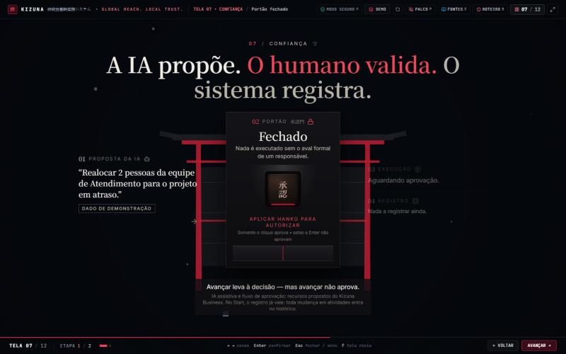

Sequência das telas 07 e 08
Quadros reais do aplicativo, capturados em 1440 × 900 nos instantes indicados e tocados aqui com a duração aproximada de cada etapa. Não é uma gravação de vídeo da tela: o painel de navegador usado nos testes não reproduz animações em tempo real, então cada momento foi fixado (relógio do 3D e animações CSS posicionados no tempo exato) e fotografado. O clique no Hanko foi um clique real de mouse.
